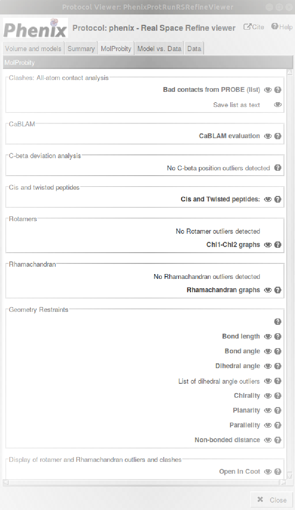

23. Phenix Real Space Refine protocol
Protocol designed to refine in real space an atomic structure into a map in Scipion by using phenix.real_space_refine program [Afonine et al., 2018]. Integrated in the PHENIX software suite, phenix.real_space_refine tool can be applied to refine cryo-EM-derived models in real space. This program computes Real Space Correlation coefficients between map and model-derived map and, additionally, it assesses the geometry and dihedral-angle combinations of atomic structures with the aim of getting the best map-fitted structure by reducing the number of geometry outliers. Validation MolProbity scores are shown at the end of the refinement process.
- Requirements to run this protocol and visualize results:
- Scipion plugin: scipion-em
- Scipion plugin: scipion-em-phenix
- PHENIX software suite (tested for versions 1.13-2998, 1.16-3549, 1.17.1-3660, 1.18.2-3874, 1.19.2-4158 and 1.20.1-4487)
- Scipion plugin: scipion-em-ccp4
- CCP4 software suite
- Scipion plugin: scipion-em-chimera
- Scipion menu: Model building -> Flexible fitting (Fig. 23.1 (A))
Protocol form parameters (Fig. 23.1 (B)):
- Input Volume: Electron density map previously downloaded or generated in Scipion.
- Resolution (Å): Input Volume resolution.
- Input atomic structure: Atomic structure previously downloaded or generated in Scipion and fitted to the electron density map.
- Extra Params: Advanced param that allows to add a string to the PHENIX command including other phenix.real_space_refine program params. Syntax to add extra params: paramName1 = value1 paramName2 = value2
- Secondary structure: Advanced param to choose including secondary structure restraints. It is set to Yes by default.
- Macro cycles: Advanced param that allows select the number of iterations of refinement. Although 5 macro-cycles, set by default, is usually enough, increasing this value might be helpful when model geometry or/and model-to-map fit is poor. The increase in the number of macro-cycles will also scale the computing times.
- Optimization strategy options: Box of advanced params that allow to modify the default refinement optimization strategy:
- Global minimization: Param set to “Yes” by default to look for the global minimum of the model.
- Rigid body: Param set to “No” by default. It considers the movement of groups of atoms as a single body.
- Local grid search: Param set to “No” by default. It is used to fit local rotamers.
- Morphing: Param set to “No” by default. It allows distortions of the model to match the electron density map.
- Simulated annealing: Param set to “No” by default. By molecular dynamics this param minimizes the energy of the model.
- Atomic Displacement Parameters (ADPs): Param set to “Yes” by default. Model refinement regarding the map param that considers temperature factors. This refinement step is performed only at the last macro-cycle.
- Protocol execution:Adding specific map/structure label is recommended in Run name section, at the form top. To add the label, open the protocol form, press the pencil symbol at the right side of Run name box, complete the label in the new opened window, press OK and, finally, close the protocol. This label will be shown in the output summary content (see below). If you want to run again this protocol, do not forget to set to Restart the Run mode.Press the Execute red button at the form bottom.
Visualization of protocol results:
After executing the protocol, press Analyze Results and the results window will be opened (Fig. 23.2).
Five taps are shown in the upper part of the results window (only four taps with PHENIX v. 1.13, identical to those shown in Fig. 21.2, Fig. 21.3, Fig. 21.4 and Fig. 21.5):
- Volume and models: ChimeraX graphics window will be opened by default. Atomic structure and volume are referred to the origin of coordinates in ChimeraX. To show the relative position of atomic structure and electron density volume, the three coordinate axes are represented; X axis (red), Y axis (yellow), and Z axis (blue) (Fig. 5.3).
- Summary: Three different summary tables are shown to describe the results obtained from Model, Data and Model vs. Data (Fig. 23.3). Concerning the atomic Model, numeric data from chains, residues, atoms and geometry are described, as well as main MolProbity statistics. Data summarizes experimental map box dimensions and different values of resolution computed with or without a mask. Model vs. Data details main real-space correlation coefficients.
MolProbity: Statistics concerning the atomic model, most of them obtained from MolProbity (Fig. 23.4).
Fig. 23.4 Protocol phenix-real space refine. MolProbity and other statistics of the atomic model.
- Clashes: All-atom contact analysis: List that contains all severe clashes (non-H atoms overlaping more than 0.4 Å) found by PROBE. All these clashes can be visualized and solved graphically in Coot. If no hydrogens were present, REDUCE adds them before running PROBE. The list can be saved in a folder selected by the user.
- CaBLAM: C-Alpha Based Low-resolution Annotation Method: Method designed to assess the mainchain geometry of the atomic model by using protein C\alpha geometry and to identify areas of probable secondary structure. Residues that fall outside contours of expected protein behaviour based on high-quality datasets are considered outliers.
- C-beta deviation analysis: C\beta outliers deviate from ideal positions by more than 0.25Å. Ideal C\beta position is determined from the average of the ideal C-N-CA-CB and N-C-CA-CB dihedrals. This measure is more sensitive than individual measures to both sidechain and mainchain misfittings. Its deviation is an indicator of incompatibility between sidechain and backbone.
- Cis and twisted peptides: Residues showing cis or twisted conformations that could be modeling errors. cis conformations are observed in about 5% of Prolines and 0.03% of general residues. Twisted peptides are almost certainly modeling errors.
- Rotamers: Rotamer outlier list contains residues that adopt an unusual conformation of \chi dihedral angles. These outliers, commonly used to characterize the conformation of protein sidechains, are detailed in Chi1-Chi2 graph, shown below.
- Rhamachandran: Rhamachandran outlier list contains residues that show an unusual combination of their \phi (C-N-CA-C) and \psi (N-CA-C-N) dihedral angles. Most of the time, Ramachandran outliers are a consequence of mistakes during the data processing. These outliers are detailed below in Rhamachandran graphs.
- Geometry Restraints: Statistics for geometry restraints used in refinement. Although in general a fully refined structure should not have any outliers, exceptionally there are some of them that are obvious in high resolution electron density maps. Types of restraints:
- Bond Length: This table indicates the number of outliers and the number of restraints (in accordance with the bond length restraints library). The list of outliers details the bonded pairs of atoms sorted by deviation (higher than 4 sigmas).
- Bond Angle: This table indicates the number of outliers and the number of restraints (in accordance with the bond angle restraints library). The list of outliers details the bonded triplets of atoms sorted by deviation (higher than 4 sigmas).
- Dihedral Angle: This table indicates the number of outliers and the number of restraints (in accordance with the side chain dihedral torsion - chi- angle restraints library). The list of outliers details the bonded tetrads of atoms sorted by deviation (higher than 4 sigmas).
- Chilarity: This table indicates the number of restraints (in accordance with the volume chilarity restraints library).
- Planarity: This table indicates the number of restraints (in accordance with the volume planarity restraints library).
- Parallelity: This table indicates the number of restraints (in accordance with the volume parallelity restraints library).
- Non-bonded distance: This table indicates the number of restraints (in accordance with the volume non-bonded distance restraints library).
- Display of rotamer and Rhamachandran outliers and clashes: Interactive visualization of outliers (Ramachandran, rotamer and C\beta) and severe clashes with .
- Model vs. Data: Real-space correlation coefficients between map and model-derived map (Fig. 23.5).
- Overall correlation coefficients [Afonine et al., 2018]:
- Mask CC: Correlation coefficient between the model-derived map and the experimental map inside the mask region built around the model with a fixed radius. This comparison aims to fit the atomic centers.
- Box CC: Correlation coefficient between the model-derived map and the whole experimental map. This comparison aims to assess the similarity of maps and remark map densities that have not been modeled.
- Volume CC: Correlation coefficient between the model-derived map and the experimental map inside the mask region built around the model considering only model-derived map regions with the highest density values, ignoring regions below a certain contouring density threshold. Particularly, in this case the N points with the highest density, inside the molecular mask, are taken into account. This comparison aims to fit the molecular envelope defined by the model-derived map.
- Peak CC: Correlation coefficient between the model-derived map and the experimental map that considers only map regions with the highest density values, ignoring regions below a certain contouring density threshold. Particularly, in this case the N points with the highest density, simultaneously present in the model-calculated map and in the experimental map, are taken into account. This comparison aims to fit the strongest peaks in model-derived and experimental maps.
- Main chain CC
- Side chain CC
- Correlation graphs:
- Plot CC vs. Chain ID: Plot of correlation coefficients regarding the chain IDs. These correlation coefficient values can be saved in a text file in the folder selected by the user.
- Plot CC vs. Residue number of the selected Chain: Plot of correlation coefficients of each chain residues. The specific chain is selected by the user in the chain option box. These correlation coefficient values for each chain can be saved in a text file in the folder selected by the user.
- Data (Fig. 23.6): Computation of Resolution and FSC.
- Summary: Basic statistics about the maps and summary of resolution estimates.
- Box info (unit cell): Map cell dimensions (pixels).
- Map Resolution Estimates (Angstroms): Resolution estimates computed considering both map experimental data and model-derived information (with and without mask).
- Using map alone (d99): Resolution cutoff beyond which Fourier map coefficients are negligibly small. Calculated from the full map or from each one of half maps [d99 (half map 1), d99 (half map 2)].
- Overall Biso: Overall isotropic B-value.
- d_model: Resolution cutoff at which the model map is the most similar to the target (experimental) map. Requires map and model. For d_model to be meaningful, model is expected to fit the map as well as possible.
- d_model (B factors = 0): It tries to avoid the blurring of the map.
- FSC (model) = 0: d_FSC_model_0; Resolution cutoff up to which the model and map Fourier coefficients are similar at FSC value 0.
- FSC (model) = 0.143: d_FSC_model_0.143; Resolution cutoff up to which the model and map Fourier coefficients are similar at FSC value 0.143.
- FSC (model) = 0.5: d_FSC_model_0.5; Resolution cutoff up to which the model and map Fourier coefficients are similar at FSC value 0.5.
- FSC (half map 1, 2) = 0.143: d_FSC; Highest resolution at which the experimental data are confident. Obtained from FSC curve calculated using two half-maps and taken at FSC=0.143. The two half maps are required to compute this value.
- Mask smoothing radius (Angstroms): Radius of the default soft mask used since sharp edges resulting from applying a binary map may introduce Fourier artifacts.
- Fourier shell correlation taps:
- FSC(Half-maps) (Only if two half maps have been added as inputs): FSC plot regarding the resolution (Å) and the spatial frequency (1/Å) based on half maps with and without masking. The intersections of the curves with FSC = 0.143 are shown. FSC plot data can be saved as text file in a folder selected by the user.
- FSC (Model-map): FSC plot regarding the resolution (Å) and the spatial frequency (1/Å) based on the experimental map and the model-derived map with and without masking. The intersections of the curves with FSC = 0.5 are shown. FSC plot data can be saved as text file in a folder selected by the user.
Summary content:
SUMMARY box:Main MolProbity statistics computed by the Phenix package to assess protein geometry using the same distributions as the MolProbity server:- Ramachandran outliers: Percentage of residues assessed that show an unusual combination of their \phi (C-N-CA-C) and \psi (N-CA-C-N) dihedral angles.
- Ramachandran favored: Percentage of residues assessed that show a normal combination of their \phi (C-N-CA-C) and \psi (N-CA-C-N) dihedral angles. Ramachandran outliers and favored residues are detailed in the Ramachandran plot. Allowed residues are included in the small region comprised between favored and outlier regions of that plot.
- Rotamer outliers: Percentage of residues assessed that adopt an unusual conformation of \chi dihedral angles. Rotamer outliers, commonly used to characterize the conformation of protein sidechains, are detailed in the Chi1-Chi2 plot.
- C-beta outliers: Number of residues showing an unusual deviation (higher than 0.25 Å) of the C\beta from its ideal position. This deviation is an indicator of incompatibility between sidechain and backbone.
- Clashscore: Score associated to the number of pairs of non-bonded atoms unsually close to each other, showing probable steric overlaps. Clashscore is calculated as the number of serious clashes per 1000 atoms. This value has to be as low as possible.
- Overall score: MolProbity overall score representing the experimental resolution expected for the structure model. This value should be lower than the actual resolution. The lower the value, the better quality of the structure model.
{kind=link}
{kind=link}
{kind=link}
{kind=link}
{kind=link}
{kind=link}